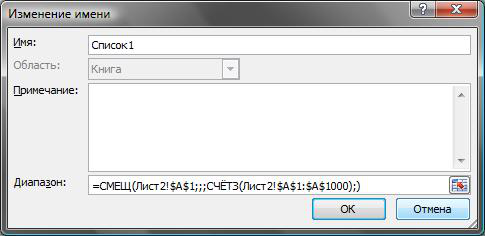
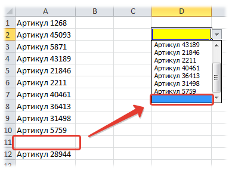
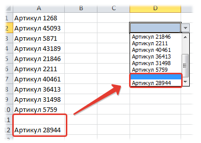

Tips_Lists_Dinamic_Range.xls (37,5 KiB, 5 484 скачиваний)
Tips_Lists_Dinamic_Range.xls (37,5 KiB, 5 484 скачиваний)Динамические именованные диапазоны
Очень часто при использовании связки Выпадающий список-Именованный диапазон возникает проблема: при добавлении новых данных в диапазон они не отразятся сразу в списке - для этого необходимо будет изменить адрес именованного диапазона. Либо указать заранее расширенный диапазон. Но тогда появляются лишние пустые значения в списке, что тоже не очень-то красиво и совсем не удобно, особенно если список не маленький. И вот здесь помогут так называемые Динамические диапазоны. Создав вместо обычного именованного диапазона динамический, уже не придется каждый раз менять адрес диапазона для отображения в списке всех добавленных значений. И отображаться будут только значения, никаких пустых строк.
Вызываем Диспетчер создания имен(Ctrl+F3), задаем имя диапазона и в поле Диапазон (Refers to) пишем формулу:
Вариант с формулой СМЕЩ
=СМЕЩ(Лист2!$A$1;;;СЧЁТЗ(Лист2!$A$1:$A$1000);)
=OFFSET(Лист2!$A$1,,,COUNTA(Лист2!$A$1:$A$1000),)

В чем главный недостаток этого метода: если добавить в список значений пропуск между значениями в виде пустой строки - список отобразит не все значения списка, т.к. СЧЕТЗ считает количество непустых ячеек:

Вариант с формулой ИНДЕКС
=Лист2!$A$1:ИНДЕКС(Лист2!$A$1:$A$1000;ПРОСМОТР(2;1/(Лист2!$A$1:$A$1000<>"");СТРОКА(Лист2!$A$1:$A$1000)))
=Лист2!$A$1:INDEX(Лист2!$A$1:$A$1000,LOOKUP(2,1/(Лист2!$A$1:$A$1000<>""),ROW(Лист2!$A$1:$A$1000)))
Изменяемые ссылки для этой формулы такие же, как и в случае с вариантом через СМЕЩ:
Однако метод через данную формулу лишен недостатка предыдущего метода: если добавить в список разрыв в виде пустой строки - список отобразится правильно, с этим разрывом и всеми значениями:

Примечание: созданные таким образом диапазоны нельзя использовать в составе функции ДВССЫЛ (INDIRECT) для создания зависимых выпадающих списков - список просто не будет работать
Скачать пример
Tips_Lists_Dinamic_Range.xls (37,5 KiB, 5 484 скачиваний)